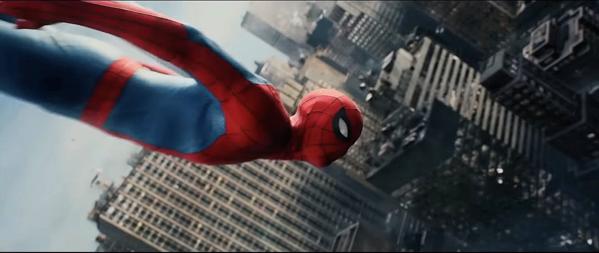

Um novo dia para o amigo da vizinhança?

Um novo dia para o amigo da vizinhança?
Por: @_ymariane
No dia 29 de julho deste ano, estreou nos cinemas brasileiros o filme "Homem-Aranha: Um Novo Dia". O filme arrecadou US$ 2,33 bilhões globalmente, se tornando a terceira maior bilheteria da história do cinema, perdendo para Avatar e Vingadores: Ultimato.
Estrelado pelo ator canadense Tom Holland, a trama, que foi muito aguardada, acompanha uma nova fase do personagem após os acontecimentos de "Homem-Aranha: Sem Volta pra Casa", mostrando um Peter mais maduro, que retoma a essência de sofrimento já característica do super-herói, o afastando da dependência a tecnologia dos Vingadores e principalmente de Tony Stark; sendo isso uma das principais críticas desde a estreia de Tom como Homem-Aranha.
Sob a direção de Destin Daniel Cretton, a produção trouxe de volta o estilo dos quadrinhos, trocando as ameaças espaciais já muito características do MCU pela ação mais urbana, prática e que foca bastante no amadurecimento e dilemas morais de Peter Parker.
Com Sadie Sink no papel de Jean Grey o filme também serviu como uma ponte para a chegada oficial dos X-men ao MCU. A atuação de Sadie foi muito elogiada e os fãs reagiram positivamente a como foi apresentado seus poderes psíquicos, a força dele e sua busca por justiça pelos danos causados à sua irmã no Controle de Danos. Os poderes de Jean Grey também protagonizaram muitas cenas icônicas, como na batalha Homem-Aranha x Hulk, ou na falsa recuperação de memória de MJ, interpretada por Zendaya, que trouxe a recriação da cena mais emocionante do Homem-Aranha de Andrew Garfield.
Fãs também levantam teorias sobre os poderes de Jean Grey serem capazes de quebrar o feitiço de esquecimento feito pelo Doutor Estranho. Durante a cena que Jean paralisa boa parte de Nova York, a personagem MJ, mesmo paralisada derrama lágrimas, criando a suposição de que talvez ela tivesse recobrado suas memórias ao lado de Peter.
No filme, outro personagem muito importante foi o Justiceiro, Frank Castle, interpretado por Jon Bernthal, onde a dinâmica desordeira de Frank contrastou muito bem com o jeito mais politicamente correto do herói, gerando muitas cenas engraçadas e também emocionantes, principalmente, como muitos comentaram, em um dos momentos finais do filme, onde o Justiceiro tem o objetivo de atingir Jean Grey, mas o disparo acaba acertando Peter. Ao assistir a cena, é possível sentir as emoções do personagem, e o peso que ela tem, pois Peter é uma das poucas conexões que Frank possui.
A cena final de Homem-Aranha, com o aperto de mão clássico de Peter e Ned, deixou o público com diversas teorias sobre como o "nerd da cadeira" pode estar recuperando sua memória sobre o melhor amigo. Alguns teorizam sobre o aperto de mão ser um feitiço e que nessa cena pode ter sido o suficiente para reverter o que foi feito pelo Doutor Estranho.
A cena pós crédito dividiu opiniões, muitas pessoas não se agradaram e disseram que não era uma cena pós crédito nível Marvel. A cena exibe o aplicativo desenvolvido por Ned que consegue rastrear o Homem-Aranha onde quer que ele esteja, e após alguns segundos de falha, o protagonista é localizado no espaço.
Isso abriu margem para muitas discussões, como na rede social reddit, onde muitos comentam sobre o fato de Tom Holland não retornar em "Vingadores: Doomsday" afinal, após as cenas pós-crédito é anunciado apenas que o Homem-Aranha retornará, não quando exatamente. As respostas mais curtidas são sobre a possibilidade de Tobey Maguire, o primeiro Homem-Aranha, estar sendo cogitado para participar de Doomsday; então a expectativa é grande para que o amigo da vizinha tenha seu retorno em Guerras Secretas, principalmente se ele adquirir o simbiótico, que ao que tudo indica tem grandes chances de acontecer, pois esse evento ocorre quando o super-herói está no espaço, assim como nas HQs.
Durante toda sua trajetória como super-herói no MCU, essa é a primeira vez que Tom Holland está recebendo diversos elogios e poucas críticas sobre seu desempenho como Homem-Aranha, o público aguardava há muito tempo o amadurecimento de seu personagem, sua independência e evolução.